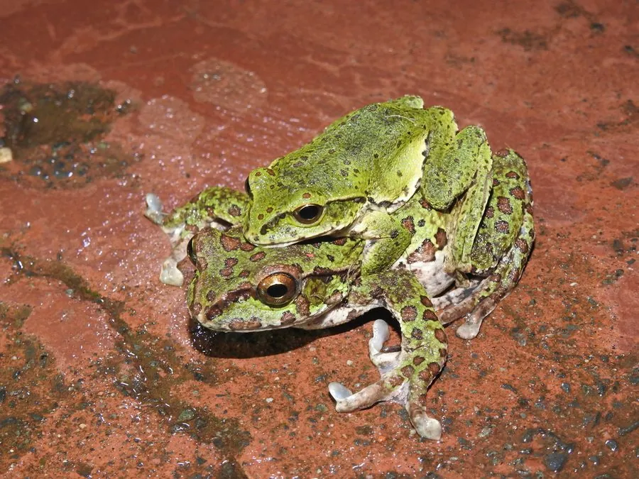

两栖动物 · 动物界
宝兴树蛙 Rhacophorus dugritei

中国四川、云南等地的树蛙，体色绿色，趾间蹼发达，繁殖期在静水塘中产卵，卵泡挂在树枝或水草上。
- 分类
- 门脊索动物门纲两栖纲目无尾目科树蛙科属树蛙属
- 栖息环境
- 海拔 1500–3000 米的常绿阔叶林、竹林和静水池塘
- 地理分布
- 中国四川、云南、湖北等地山地
- 保护级别
- IUCN 无危（LC）；中国“三有”保护动物
物种志
宝兴树蛙体长 5–7 厘米，雌蛙略大。头部扁平，吻端钝圆，眼睛大而突出；体背呈鲜绿色或黄绿色，散布少量深色斑点，腹部白色或淡黄色；四肢细长，趾端有吸盘，趾间蹼发达，能在树枝和水草间攀爬、滑翔。
它分布于中国四川、云南、湖北等地的山地，栖息于海拔 1500–3000 米的常绿阔叶林、竹林和静水池塘附近，白天伏在树叶背面，夜间捕食昆虫和蜘蛛。繁殖期在 4–7 月，雄蛙在水边鸣叫，雌蛙用后腿搅拌出泡沫卵团，把卵产在伸向水面的树枝或水草上，蝌蚪孵化后落入水中生活。宝兴树蛙的泡沫卵团能保持湿润、保护卵粒，是适应山地环境的繁殖策略，中国将其列入“三有”名录。
形态与习性
- 食性昆虫和蜘蛛
- 体长约 5–7 cm
- 繁殖泡沫卵团挂在树枝或水草上，蝌蚪落入水中
- 活动节律夜行性，白天伏在树叶背面
- 攀爬趾端有吸盘，趾间蹼发达
- 栖息常绿阔叶林、竹林和静水池塘附近
趣味知识
- 宝兴树蛙用后腿搅拌出泡沫卵团，把卵挂在伸向水面的树枝上。
- 蝌蚪孵化后会从泡沫团里掉进下方的水塘。
- 它的绿色体色和吸盘让它能稳稳待在树叶和竹叶上。